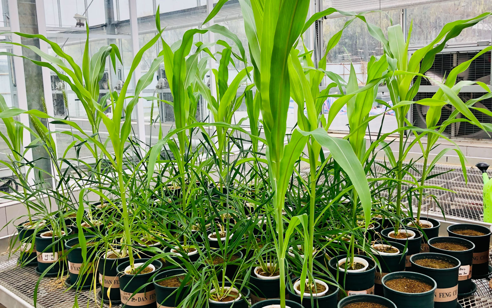
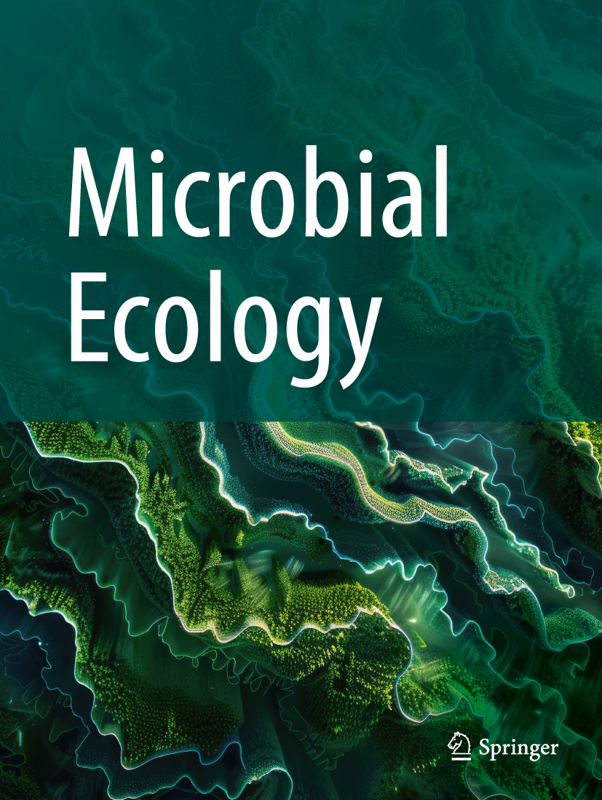
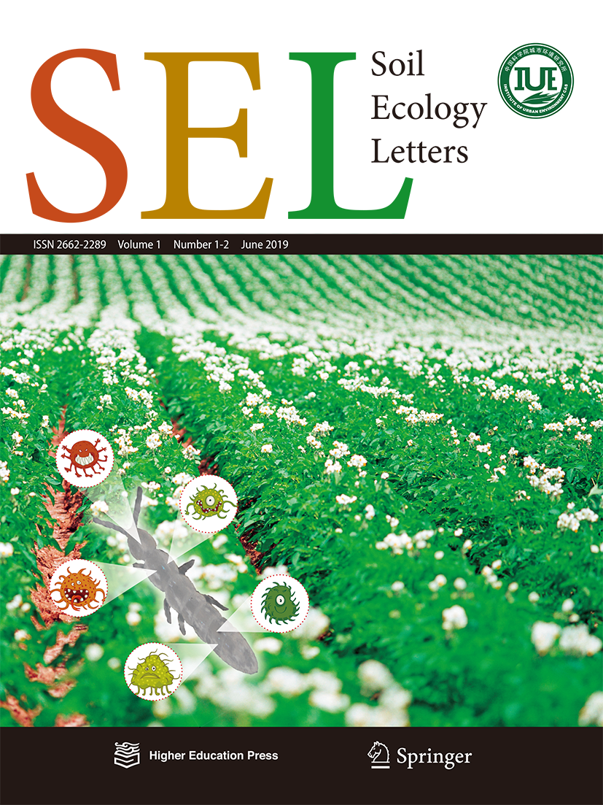

How do plant–microbe interactions
shape nitrogen use and loss in agroecosystems?

01
About
I study how plant–microbe interactions regulate the fate
of nitrogen in agroecosystems, from microbial nitrogen
transformations to the balance between nitrogen losses
to the environment and plant nitrogen acquisition.
As climate warming intensifies, I am particularly
interested in how microbial functional guilds respond
to plant traits, environmental conditions and ecological
history, and whether these responses can sustain nitrogen
retention, plant nutrition and the resilience of
soil–plant systems.
The efficacy of 3,4-dimethylpyrazole phosphate
on N₂O emissions is linked to niche differentiation
of ammonia oxidizing archaea and bacteria across
four arable soils
Links variation in DMPP efficacy across soils to
ecological differentiation between ammonia-oxidising
archaea and bacteria.

Microbial Ecology · 2023
Niche Differentiation Among Canonical Nitrifiers
and N₂O Reducers Is Linked to Varying Effects
of Nitrification Inhibitors DCD and DMPP
in Two Arable Soils
Examines how ecological differentiation among
nitrifiers and N₂O-reducing guilds contributes
to soil-dependent responses to nitrification inhibitors.

Soil Ecology Letters · 2025
Interactions of r/K-strategist bacteria
and bacterivorous nematodes regulate
herbivorous nematodes abundances under
organic and inorganic fertilization practices
Explores how long-term fertilisation reshapes
interactions among bacterial life-history strategies
and soil nematode trophic groups.